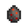
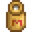
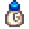
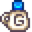
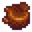

Animales
Los animales desempeñan varias funciones en la granja. Algunos son animales salvajes con los que no se puede interactuar. Se puede obtener una mascota (gato, perro o tortuga) con los que el jugador puede entablar amistad. Se puede comprar un caballo para montar y se pueden comprar animales de granja que sirven como fuente de diversos tipos de productos, proporcionando recursos y ganancias.
Los animales de granja necesitan un edificio para alojarse. Estos edificios se pueden obtener de Robin en la Carpintería, y su construcción suele requerir tres días. Las crías de animales de granja (y equipamiento relacionado que se necesita para la ganadería) pueden ser comprados en el Rancho de Marnie. Los animales también pueden nacer en una Incubadora. Tan pronto el animal es adquirido, debe ser asignado(a) hacia un edificio de granja existente de su mismo tipo, el cual será designado como su hogar. Cada edificio tiene un límite en el número de animales que puede albergar. Los animales pueden ser asignados a un edificio diferente acariciándolos primero e interactuando con ellos una segunda vez. Aparece un cuadro emergente que permite realizar la reasignación a su nuevo hogar.
Las crías de animales de granja deben madurar y convertirse en adultos antes de poder producir productos animales. Cada mañana, los animales adultos que viven en corrales (gallinas, patos, conejos y dinosaurios) tienen una probabilidad de producir productos que pueden ser recolectados desde el suelo del mismo edificio. Utilizando una cubeta lechera, las vacas, usualmente, pueden producir leche diariamente, y las cabras pueden producir leche una vez cada dos días. Puedes esquilar las ovejas con unas tijeras de esquilar cuando su pelaje crece, y se puede dejar salir a los cerdos para que desentierren trufas que luego se recogen a las afueras del establo.
Mascotas
El jugador puede adoptar un gato o un perro, dependiendo de cuál se eligió en la pantalla de creación del personaje. Hay cinco estilos diferentes de perros y cinco de gatos.
Para que la mascota llegue a la granja, se activará una escena en la que Marnie estará esperando en la puerta de la casa de campo con un perro o un gato el primer miércoles o viernes soleado, por la mañana, en Primavera, después de haber ganado  1000o. Se debe salir de la Casa de Campo entre las 06:00 y las 09:30 para activar este evento. El día 20 de Primavera se activará el evento, independientemente de si el jugador ha ganado suficiente dinero. Adoptar al animal es opcional, aparecerá un diálogo donde se acepta o no. Se puede elegir cualquier nombre para la mascota en el momento de adoptarla, aunque no se puede cambiar su nombre después de hacerlo. El jugador no ha conocido a Marnie hasta ese entonces, el encuentro contará para la misión Presentaciones.
1000o. Se debe salir de la Casa de Campo entre las 06:00 y las 09:30 para activar este evento. El día 20 de Primavera se activará el evento, independientemente de si el jugador ha ganado suficiente dinero. Adoptar al animal es opcional, aparecerá un diálogo donde se acepta o no. Se puede elegir cualquier nombre para la mascota en el momento de adoptarla, aunque no se puede cambiar su nombre después de hacerlo. El jugador no ha conocido a Marnie hasta ese entonces, el encuentro contará para la misión Presentaciones.
Hay un ccuenco para la mascota sobre unas tablas de madera en algún lugar de la granja: en la zona superior izquierda junto a la casa, en las granjas Estándar, Forestal, Salvaje, Minera y Fluvial; en la intersección de las diferentes secciones de la granja de las Cuatro Esquinas y justo encima de la orilla derecha en la granja de La Playa. Se puede pedir a Robin en la Carpintería, mover el cuenco de lugar.
El cuenco puede llenarse con agua de la regadera. En días lluviosos, el cuenco de la mascota se llenará automáticamente. Si llueve antes de adoptar una mascota, el cuenco permanecerá lleno hasta que se adopte una mascota.

Tazón para mascotas vacío

Tazón para mascotas lleno

Amistad
La mascota tiene una amistad máxima de 1.000 puntos, que aumenta en 12 cada vez que es acariciada. Cada 200 puntos equivalen a 1 nivel, y tener 999 puntos de amistad hará que el jugador pueda optar a 1 punto en la Evaluación del Abuelo. Haz clic en la mascota una vez al día para acariciarla. 
Regar el cuenco de la mascota hará que su amistad aumente en 6 puntos a la mañana siguiente. Ten en cuenta que esto no se activará si llueve a la mañana siguiente.
Tras alcanzar 1.000 puntos de amistad con la mascota, aparece el siguiente mensaje: "<Nombre de mascota> te ama ♡" Aparte de este mensaje, no hay forma de comprobar la amistad con la mascota en el juego.
Al alcanzar el máximo de amistad, cada mascota puede dejar caer objetos al suelo como regalo para el jugador cuando la acaricia por primera vez cada día. Hay un 20 % de posibilidades de que una mascota deje un regalo cada día. Al igual que los regalos enviados por correo por los aldeanos, el regalo que deja la mascota se asigna al azar cada vez que se recarga el mismo día.
Los Sombreros pueden ser colocados sobre los gatos y los perros. Una vez colocado, puede ser removido o reemplazado por otro, haciendo clic derecho del mouse, con el sombrero seleccionado, en la mano.
- No existe ningún mecanismo para que disminuya la amistad con una mascota. Ignorar al animal o usar un tirachinas en él no disminuirá la amistad.
- Con mascotas adicionales, es necesario que cada mascota tenga su cuenco para evitar perder la amistad con esa mascota.
- Cualquier mascota que ya no sea deseada se puede eliminar de la granja usando Polvo de mariposa sobre ella.
Mascotas adicionales
Después de alcanzar la máxima amistad con la mascota inicial o llegar al Año 2 sin una mascota, el jugador puede comprar licencias de mascotas en el Rancho de Marnie para adoptar mascotas adicionales. El jugador deberá pedir a Robin, construir en el exterior, un cuenco adicional, para cada nueva mascota. Los tazones para mascotas se construyen instantáneamente al comprarlos y colocarlos. Se puede mover o demoler de forma similar a cualquier otro edificio de granja.
Los gatos y perros cuestan  40 000o cada uno.
También hay dos variedades de tortugas, una por
40 000o cada uno.
También hay dos variedades de tortugas, una por  60 000o y otra por
60 000o y otra por  500 000o.
500 000o.
- No se puede colocar sombreros sobre las tortugas.
Regalos de mascotas
Al alcanzar el máximo de amistad, cada mascota puede dejar caer objetos al suelo como regalo para el jugador cuando la acaricia por primera vez cada día. Hay un 20 % de posibilidades de que una mascota deje caer un regalo cada día.Al igual que los regalos enviados en el correo de los aldeanos, el regalo que deja la mascota es aleatorio cada vez. el mismo día se recarga. Las posibilidades que se enumeran a continuación reflejan la probabilidad de que se elija un regalo, después de superar el 20 % de posibilidades de que se abandone cualquier regalo.
| Regalos de mascotas | ||||||||||||||||||||||||||||||||||||||||||||||||||||||||||||||||||||||||||||||||||||||||||||||||||||||||||||||
|---|---|---|---|---|---|---|---|---|---|---|---|---|---|---|---|---|---|---|---|---|---|---|---|---|---|---|---|---|---|---|---|---|---|---|---|---|---|---|---|---|---|---|---|---|---|---|---|---|---|---|---|---|---|---|---|---|---|---|---|---|---|---|---|---|---|---|---|---|---|---|---|---|---|---|---|---|---|---|---|---|---|---|---|---|---|---|---|---|---|---|---|---|---|---|---|---|---|---|---|---|---|---|---|---|---|---|---|---|---|---|
| ||||||||||||||||||||||||||||||||||||||||||||||||||||||||||||||||||||||||||||||||||||||||||||||||||||||||||||||
Los peces que los gatos pueden pescar respetan la temporada actual, el clima y los requisitos de tiempo del juego. Por ejemplo, si lo acaricia después de las 6 p. m., existe la posibilidad de que el pez sea un besugo.
Caballo

El caballo es un animal que al montarlo aumenta la velocidad de movimiento en un 30% (aumenta al beber Café), y no se ralentiza al cabalgar por los cultivos de la granja. Se puede obtener comprando una Cuadra de la Carpintería, y puede ser nombrado la primera vez que el jugador intenta montarlo.
Dejar al caballo en algún lugar hará que espere al jugador y a su regreso se mostrará uno de estos mensajes: "<Nombre de caballo> se preguntaba dónde te habías metido." o "Tu fiel corcel esperaba pacientemente tu retorno.". Acostarse después de dejar al caballo fuera de la granja, hará que el caballo encuentre automáticamente el camino a casa y a la cuadra a la mañana siguiente.
El caballo no puede atravesar huecos pequeños (excepto puertas) cuando viaja en vertical.
Se puede interactuar con estos objetos mientras se está montado en el caballo:
- Puerta: puede abrirse y cerrarse.
- Corral y Establo: las puertas de los animales pueden abrirse y cerrarse.
- Contenedor de Envíos: se pueden colocar objetos en su interior.
- Estanque de peces: puede recoger objetos, añadir peces, añadir objetos de misión, cambiar la apariencia y vaciar el estanque.
- Aldeanos: puede hablar con los aldeanos.
La Flauta para caballos puede utilizarse para acercar el caballo al jugador. Solo funciona en exteriores (incluida la Isla Jengibre y el Desierto).
Los Sombreros puede ser colocados sobre los caballos.
La Zanahoria puede ser usada para alimentar a los caballos aumentando su  Velocidad (+0.4) por el resto del día.
Velocidad (+0.4) por el resto del día.
Animales de corral
Estos animales no pueden comprarse hasta que se construya un Corral en la granja, y deben ocupar un lugar en el mismo. Dejarán sus productos dentro del corral cada mañana.
Gallinas
- Articulo principal: Gallina
Las gallinas adultas producirán huevos cada mañanas si se las alimenta. Las gallinas que son felices pueden producir huevos XXL y de calidad que tienen mayor valor.
| Imagen | Nombre | Costo | Produce | Venta: 5 corazones |
|---|---|---|---|---|
| Gallina | ||||
| Gallina | ||||
| Gallina | ||||
| Gallina sombría | N/A |  Huevo sombrío - |
||
| Gallina dorada | N/A |
El hecho de que recibas una gallina marrón o blanca cuando la compras de Marnie es totalmente aleatorio.
Después de ver el evento de 8 corazones de Shane, cada gallina que compres de Marnie o un huevo marrón o blanco eclosionado en una Incubadora tiene un 25% de probabilidades de ser azul. Aparte de su aspecto, las gallinas azules son idénticas a las gallinas blancas.
Se puede obtener una Gallina Blanca, Marrón o Azul (si se ha desbloqueado) incubando un huevo de cualquiera de los dos tipos (Blanco o Marrón).
Una Gallina sombría debe nacer de un Huevo sombrío en una Incubadora. Hay tres formas de obtener un Huevo sombrío. En un evento aleatorio, después de dormir, una bruja sobrevolará uno de los Corrales grandes o de lujo y dejará un huevo sombrío por la mañana. También se puede comprar un huevo de vacío a Krobus por  5000o en Las cloacas. Shane también puede regalar un Huevo sombrío si se casa con él.
5000o en Las cloacas. Shane también puede regalar un Huevo sombrío si se casa con él.
Para obtener Huevos Dorados y Gallinas Doradas, se debe alcanzar la Perfección. Después de eso, se puede comprar un Huevo Dorado en el Rancho de Marnie por  100 000o, Habitación de nueces del Señor Qi por
100 000o, Habitación de nueces del Señor Qi por  100, o durante el evento de la Bruja.
100, o durante el evento de la Bruja.
Patos
- Articulo principal: Pato
Los patos adultos pueden dejar huevos o producir Pluma de pato cada dos días. Los patos felices tienen más probabilidad de producir plumas de pato en vez de huevos.
| Imagen | Nombre | Costo | Requisitos | Produce | Venta: 5 corazones |
|---|---|---|---|---|---|
| Pato | Corral grande |
Conejos
- Articulo principal: Conejo
| Imagen | Nombre | Costo | Requisitos | Produce | Venta: 5 corazones |
|---|---|---|---|---|---|
| Conejo | Corral de lujo |
Dinosaurios
- Articulo principal: Dinosaurio
Para obtener un Dinosaurio, hay que encontrar un Huevo de dinosaurio y colocarlo en una Incubadora. En aproximadamente 12,5 días, nacerá un dinosaurio.
El Dinosaurio actúa como cualquier otro animal del corral, pero pone un Huevo de Dinosaurio cada 7 días y no emite ningún sonido.
| Imagen | Nombre | Costo | Requisitos | Produce | Venta: 5 corazones |
|---|---|---|---|---|---|
| Dinosaurio | N/A | Corral grande |
Animales de establo
Estos animales no pueden ser comprados hasta que un Establo sea construido en la granja, y deben ocupar un espacio en el mismo. Sus productos se recolectan con una herramienta o, en el caso de los cerdos, se dejan en el suelo al aire libre mientras pastan.
Los animales de establos pueden embarazarse en cualquier momento si la opción de embarazo está habilitada en su menú de estado. Este menú se abre mientras interactúas con el animal después de darle cariño. Un icono a la derecha del menú puede ser activado para permitir el embarazo de ese animal. Si un animal se queda preñado, durante la noche aparecerá un mensaje diciendo que ha dado a luz. El juego pedirá al jugador que elija un nombre para el nuevo animal. Para que se produzca el embarazo, el jugador debe haber adquirido al menos un Establo Grande y tener espacio suficiente para otro animal.
Vacas
- Articulo principal: Vaca
| Imagen | Nombre | Costo | Produce | Venta: 5 corazones |
|---|---|---|---|---|

|
Vaca |  Leche - |
||

|
Vaca |
Cabras
- Articulo principal: Cabra
Las cabras suelen producir leche cada dos días. Al igual que en el caso de las vacas, la leche de cabra puede recogerse con una Cubeta lechera.
| Imagen | Nombre | Costo | Requisitos | Produce | Venta: 5 corazones |
|---|---|---|---|---|---|

|
Cabra | Establo grande |  Leche de cabra -  Leche de cabra XXL - |
Oveja
- Articulo principal: Oveja
Las ovejas pueden esquilarse cuando les crece el pelaje. Las Tijeras de esquilar se pueden comprar en el Rancho de Marnie.
Normalmente, a una oveja le crecerá el pelaje cada 3 días si ha sido alimentada y tiene al menos 70 puntos de felicidad.
Si el jugador tiene 900 o más de Amistad con la oveja y la ha acariciado al menos una vez, el tiempo de producción se reducirá a dos días.
Si el jugador también tiene la profesión: Pastor, reducirá el tiempo necesario para que vuelva a crecer un día más, haciendo que a una oveja le crezca el pelaje cada día.
| Imagen | Nombre | Costo | Requisitos | Produce | Venta: 5 corazones |
|---|---|---|---|---|---|

|
Oveja | Establo de lujo |
Cerdos
- Articulo principal: Cerdo
Los cerdos encontrarán Trufas cuando se les deje salir al exterior. Las Trufas se pueden utilizar en la Aceitera para hacer Aceite de trufa.
Su recolección será afectada por la habilidad de Recolección, que permite al jugador recolectar Trufas de calidad Iridio con probabilidad de doble recolección.
Durante el invierno, los cerdos no producen Trufas, ya que no salen del establo.
| Imagen | Nombre | Costo | Requisitos | Produce | Venta: 5 corazones |
|---|---|---|---|---|---|

|
Cerdo | Establo de lujo |  Trufa - |
Avestruces
- Articulo principal: Avestruz
| Imagen | Nombre | Costo | Requisitos | Produce | Venta: 5 corazones |
|---|---|---|---|---|---|

|
Avestruz | N/A | Establo |
Cuidado animal
Amistad

Los animales que viven en corrales y establos tienen una calificación de amistad, que se puede ver haciendo click derecho sobre ellos después de acariciarlos (si se sostiene heno, esta ventana no se puede abrir). La puntuación es de 5 corazones, se muestra en incrementos de medio corazón y se tiene en cuenta a la hora de decidir la probabilidad de que ese animal produzca productos de mayor calidad, si es que es capaz de producirlos en primer lugar.
Medio corazón equivale a 100 puntos de amistad, haciendo que el valor máximo de Amistad sea 1000.
Las acciones que afectan a la amistad son las siguientes:
- Acariciar (+15 o +30 si el jugador tiene Corralero o Pastor y el animal es del tipo correspondiente)
- Ordeñar o esquilar (+5, No hay penalización por no ser ordeñado o esquilado)
- Comer hierba (+8)
- No tener alimento (-20 Calculado al final del día)
- Dejarlo fuera por la noche (-20 Calculado al final del día)
- No acariciarlo (de -5 a -10 Calculado al final del día por la fórmula
(10 - (Amistad / 200))). Esto significa que perderán menos amistad si ya tienen una amistad alta.
Estado de ánimo
Al igual que la amistad, el estado de ánimo puede comprobarse haciendo click derecho después de acariciar al animal.
El estado de ánimo es un factor muy importante a la hora de determinar la calidad y el tipo de los productos animales. Sólo se tiene en cuenta cuando el juego baraja productos animales al principio del día, y no tiene ningún efecto en caso contrario.
El estado de ánimo se evalúa entre 0 y 255. Puedes comprobar el valor haciendo click derecho sobre los animales:
- <Nombre del animal> ¡Parece muy feliz hoy! indica que el Estado de Ánimo es de al menos 200 y como máximo 255.
- <Nombre del animal> Parece estar bien. indica que el Estado de Ánimo es igual o superior a 30 e inferior a 200.
- <Nombre del animal> Parece triste. indica que el Estado de Ánimo es igual o superior a 0 e inferior a 30.
Las acciones que afectan al Estado de Ánimo son las siguientes (cada 10 minutos se refiere a minutos dentro del juego):
Aumenta el estado de ánimo:
- Comer hierba (Establece el estado de ánimo a 255).
- Acariciarlo (de +32 a +36 dependiendo del tipo de animal, el doble si el jugador es Pastor o Corralero y el animal es de tipo relevante).
- Si es Invierno y el animal se encuentra en una zona con un Radiador, y su estado de ánimo es de 150 o mayor (de +4 a +8 cada 10 minutos más allá de las 18:00 mientras el jugador esté despierto, hasta 255. Sólo se necesita un radiador. Anula todos los demás efectos "cada 10 minutos".).
- El animal fue alimentado (+4 a +16, dependiendo del tipo de animal, Calculado cuando el Jugador duerme, comprueba si el animal comió heno o hierba).
- El animal está en el exterior después de las 6:00 pm, pero antes de las 7:00 pm, y tiene menos de 150 de Estado de ánimo (+4 a +8 cada 10 minutos, no se acumula con ningún otro efecto "cada 10 minutos").
Disminuye el estado de ánimo:
- El animal está afuera bajo la lluvia o en Invierno (de -4 a -8 cada 10 minutos, no se acumula con ningún otro efecto "cada 10 minutos").
- El animal está afuera pasado las 7PM (de -4 a -8 cada 10 minutos, no se acumula con ningún otro efecto "cada 10 minutos").
- El animal duerme fuera (-La mitad del estado de ánimo actual, Calculado cuando el Jugador duerme).
- No acariciar al animal (de -20 a -40, dependiendo del tipo de animal, Calculado cuando el Jugador duerme).
- El animal no fue alimentado (-100, Calculado cuando el Jugador duerme).
Producción
Los nuevos animales deben crecer hasta su adultez antes de que puedan producir algún producto. Cada tipo de animal necesita un número diferente de días antes de poder fabricar un producto. Por ejemplo, las vacas y gallinas pueden producir leche y huevos todos los días, y las cabras suelen producir leche cada dos días. Aquellos animales que producen productos XXL/de lujo, tienden a producir con más frecuencia (ver "Casos especiales" abajo).
Si el animal ha cumplido la cantidad de días requerida para crear su producto, se realizarán algunas comprobaciones adicionales para determinar si realmente producirá.
- Si el animal no ha sido alimentado, no producirá.
- Si el animal tiene menos de 70 puntos de Ánimo, hay una probabilidad de que no produzca. Cuanto menor sea el estado de ánimo, menor será la probabilidad de que produzca. El porcentaje de probabilidades de que siga produciendo es igual a
Ánimo / 70.
Si el animal produce un producto XXL o de lujo, y la calidad de los productos, viene determinada al principio del día por cierta aleatoriedad, así como por una combinación de Estado de Ánimo y Amistad.
- Si el animal tiene 150 puntos de ánimo o más, tendrá la habilidad de producir productos XXL o de Lujo (tener en cuenta, esto solo es la habilidad, la probabilidad real para estos objetos está cubierta en las secciones de abajo, los productos XXL y de lujo no son garantizados).
- Si el animal tiene 150 puntos de ánimo o menos, también hay una probabilidad de que produzcan productos XXL o de lujo. Cuanto menor sea el estado de ánimo, menor será la probabilidad de que produzca. El porcentaje de probabilidades de que siga produciendo es igual a
Ánimo / 150.
Caso especial: Si el animal cumple con los requisitos para producir algo, pero no cuentan con la habilidad de producir objetos XXL o de lujo, el juego no registrará el hecho de que el animal produjo algo ese día. En este caso, los animales que normalmente se demoran varios diías en producir, producirán de nuevo inmediatamente en el día siguiente.
Productos de lujo y XXL
Un "Modificador de Ánimo" es calculado cuando se baraja la posibilidad de que un producto de lujo sea creado (Productos XXL, Plumas de pato, y Patas de conejo) de las siguientes maneras:
- Si el Ánimo es más de 200, se multiplicará por 1.5.
- Si el Ánimo es 100 o menos, el "Modificador de Ánimo" será el ánimo de los animales menos 100 (esto resultará siempre en un modificador negativo o cero).
- De lo contrario, el "Modificador de Ánimo" es cero (el estado de ánimo es superior a 100 y hasta 200).
Este "Modificador de Ánimo" será utilizado de diferentes maneras dependiendo del animal.
Plumas de pato y Patas de conejo
Los Patos y Conejos siempre tomarán en cuenta la Suerte Diaria para determinar si van a crear algún producto de lujo.
Para cada conejo, un puntaje global es creado utilizando la siguiente fórmula: ((Amistad + (Ánimo × Modificador de Ánimo)) / 5000) + Suerte Diaria
Para cada pato, un puntaje global es creado utilizando la siguiente fórmula: ((Amistad + (Ánimo × Modificador de Ánimo)) / 4750) + Suerte Diaria
Por ejemplo, un conejo con 600 amistad (3 Corazones), 150 ánimo, y 0.10 Suerte diaria, se calcularía de la siguiente manera:
= ((600 + (150 × 0)) / 5000) + 0.10
= ((600 + 0) / 5000) + 0.10
= 0.22
Cada vez que se baraja un producto, se tira un número aleatorio entre 0-1 contra esta puntuación. Si la puntuación total es superior al número aleatorio, se creará un producto de lujo. Con la Amistad, Ánimo y Suerte al máximo, hay un 40% de posibilidades de obtener una Pata de conejo y un 42% de obtener una Pluma de pato.
Huevos y Leches XXL
Para que los animales produzcan productos XXL, el juego tomará en cuenta el Ánimo y la Amistad.
Solo los animales con 200 puntos o más de amistad pueden producir productos XXL.
Cada animal tendrá un puntaje global creado a partir de la siguiente fórmula: (Amistad + (Ánimo × Modificador de Ánimo)) / 1200
Por ejemplo, si un animal con 600 amistad (3 corazones) y 210 Ánimo sería calculado de la siguiente manera:
= (600 + (210 × 1.5)) / 1200
= (600 + 315) / 1200
= 0.7625
Cada vez que se baraja un producto, se elige al azar un número entre 0-1. Si la puntuación total es superior al número aleatorio, se creará un producto XXL. En nuestro ejemplo hay un 76% de posibilidades de que salga un producto XXL. Una puntuación global de al menos 1200 garantizará un producto XXL.
Calidad
Si el animal tiene la habilidad de producir un objeto de calidad, existe la probabilidad de obtener un producto desde una calidad normal, hasta una de calidad iridio.
Cada animal tendrá un puntaje global creado con la siguiente fórmula: (Amistad / 1000) - (1 - (Ánimo / 225))
Por ejemplo, un animal con 600 Amistad (3 corazones) y 150 Ánimo sería calculado de la siguiente manera:
= (600 / 1000) - (1 - (150 / 225))
= 0.6 - (1 - 0.666...)
= 0.6 - 0.333...
= 0.266...
Si el jugador tiene la profesión de Pastor o Ranchero, se añadirá 0,333 a la puntuación por cualquier animal de establo o de corral, respectivamente.
El juego empezará a revisar qué calidad crear viendo primero si el puntaje es mayor a 0.95. Si lo es, el puntaje dividido entre 2 será comparado con un número al azar entre 0-1. Si el puntaje dividido entre 2 es mayor que el número al azar, el objeto será de calidad Iridio.
- En nuestro ejemplo, un puntaje de 0.266... no es superior a 0.95; el objeto no será capaz de convertirse en calidad Iridio.
Si un objeto de calidad Iridio no es producido, el puntaje dividido entre 2 será comparado con un número al azar entre 0-1. Si el puntaje dividido entre 2 es mayor que el número al azar, el objeto será de calidad Oro.
- En nuestro ejemplo, un puntaje de 0.266... dividido entre 2 sería 0.133..., el objeto tendría una probabilidad del 13% de convertir en calidad Oro.
Si un objeto de calidad Oro no es producido, el puntaje será comparado con un número al azar entre 0-1. Si es mayor que el número al azar, el objeto será de calidad Plata.
- En nuestro ejemplo, si el objeto no es de calidad Oro, tiene un 26.6% de probabilidades de que sea calidad Plata.
Si el objeto no es de calidad Plata, entonces será de calidad Normal.
Hogares
Los edificios se pueden comprar en la Carpintería, y su construcción se completará en 3 días. Una vez colocados, puedes cambiar su posición dentro de la granja desde la Carpintería.
Los Corrales, Establos, y Criaderos de babas dan hogar a los animales, los Silos almacenan heno, mientras que la Cuadra desbloquea al Caballo.
Si se construyen 2 o más Corrales o Establos, los animales pueden ser reubicados haciendo clic en el animal y eligiendo el icono de la casa.
Comida
Los animales de granja que viven en establos y corrales necesitan comer todos los días, una "ración" por animal. Ellos pueden comer hierba fresca (si se les permite salir al exterior) o heno (si se mantienen en el interior o no pueden encontrar hierba). No mueren si no se les alimenta, pero se alteran y dejan de producir productos animales hasta que se reanude la alimentación. No es necesario darles de comer los días de festivales (excepto el Mercado nocturno), aunque comerán hierba si se les deja en el exterior. No se consumirá heno si se dejan dentro.
Los animales recién empollados, nacidos, o comprados no necesitan ser alimentados el mismo día en que llegan a la granja, pero luego las crías de animales necesitarán comer una ración (igual que los adultos) todos los días. Si no tienen comida, ese día no crecerán.
Los animales de granja prefieren la hierba fresca al heno, y se ponen "¡muy felices!". (el mejor ánimo) al comer hierba fresca. No salen en Invierno ni cuando llueve, hay tormenta o nieve. Los animales que permanezcan en el interior o no encuentren hierba para comer, comerán heno en su lugar, si está disponible. Dado que cultivar alimentos para animales es casi imposible en Invierno (toda la Hierba y el Trigo de la Granja desaparecen el 1 de Invierno), es aconsejable prepararse cosechando todo el Heno posible en Otoño.
Las Babas en el Criadero de babas no necesitan comida, pero sus bebederos pueden llenarse diariamente con agua de la regadera o automáticamente con un aspersor. Si están con agua, las babas producirán Bolas de baba al día siguiente.
Los caballos y las mascotas no necesitan comer, pero las mascotas estarán más felices cuando se llene el tazón de agua cada día.
Animales atrapados afuera
Los animales que salen al exterior suelen volver a sus establos a las 18:00 para dormir. Volver a cerrar las puertas del establo por la noche impide que salgan inmediatamente por la mañana a comer hierba, antes de que el jugador tenga tiempo de acariciarlos y atenderlos al día siguiente. Cerrar la puerta antes de que todos los animales hayan regresado hará que los que se queden fuera durante la noche sean vulnerables a los ataques de los animales salvajes.
Las condiciones exactas que hacen que un animal quede atrapado fuera no están claras. Es más probable que un animal quede atrapado en el exterior si el jugador no sale de la granja después de las 17:00 (cuando los animales empiezan a volver al establo/corral) y no entra en el establo/corral después de las 17:00. (Tanto salir de la granja como entrar en el establo/corral después de las 17:00 hace que los animales se transporten o aparezcan en el interior del establo/corral automáticamente). También es más probable que ocurra si el jugador se va a la cama antes de las 17:00.
Si al día siguiente llueve y el animal se ha quedado fuera, se quedará fuera bajo la lluvia. Este es el único caso en el que un animal de granja estará fuera durante la lluvia. De manera similar, si el animal es atrapado afuera, durante la noche del 28 de Otoño, el animal se quedará afuera durante el 1 de Invierno.
Si el animal se queda afuera de su corral/establo, el día siguiente estará molesto.

Animal molesto.

Animal en la lluvia.

Animal afuera, durante el invierno.
Ataque de animales salvajes

Si un animal ha sido atrapado afuera (ver sección anterior) con las puertas cerradas, hay una probabilidad de que sean atacados por un animal salvaje durante la noche.[1]
Después de que el jugador se vaya a dormir, cualquier evento que vaya a ocurrir durante la noche (como los eventos de Lotes) se calculan de forma normal. Si no va a ocurrir ningún evento, habrá un 50% de posibilidades de que el juego intente iniciar un evento de ataque de animales salvajes. Si este evento tiene lugar, el juego recorrerá todos los edificios para encontrar un establo o corral que tenga sus puertas cerradas y tenga animales olvidados fuera.
Por cada edificio, el juego toma un número al azar entre 0 y 1 y lo compara con 1/(el número total de edificios de granja). Si el número al azar es mayor, el juego ignora el edificio. En otras palabras, mientras más edificios el jugador tiene, hay menos posibilidades de que ocurra un ataque. Por ejemplo, si el jugador tiene 2 edificios de granja, cada edificio tiene una probabilidad de 50% de que sea atacado, 3 edificios sería un 33%, 4 edificios sería 25%, etc.
Una vez que el edificio haya sido elegido, el evento toma el primer animal que esté afuera de su hogar y será el primer objetivo para ser atacado. El animal será borrado del juego y en la mañana siguiente, el resto de animales tendrán un mal ánimo acompañado del siguiente mensaje: "<Nombre del animal> parece nervioso y paranoico hoy. Como si algo malo hubiera ocurrido anoche." Aparte de este mensaje, los demás animales no se ven afectados.
Nacimiento de animales
De manera similar a los ataques de animales, si no hay otro evento que ocurra durante la noche, hay un 50% de probabilidades de que el juego inicie el evento del nacimiento de un animal. El juego busca en todos los edificios un Establo mejorado que no esté lleno. A continuación, el juego realiza otra comprobación en la que la probabilidad de continuar con el evento es el número de animales que hay dentro multiplicado por 0,55%. Por ejemplo, un establo mejorado con tres animales dentro tendría un 1,65% de posibilidades de pasar esta comprobación. Si el edificio falla esta comprobación, el juego continuará pasando por todos los edificios hasta que no quede ninguno.
Si el establo pasa todos las revisiones, un animal al azar es elegido. Si el animal no es un bebé y tiene el embarazo habilitado, ese animal dará a luz.
Vendiendo animales
Para vender un animal de corral o establo, haz clic derecho sobre el animal después de darle cariño, la interfaz de amistad/ánimo aparece. Mueve el cursor sobre el botón de la moneda de oro de la derecha para ver por cuánto se puede vender el animal. Pulsa ese botón y la confirmación que sigue para completar la venta.
El precio de venta de un animal de granja es Precio * ((Amistad / 1000) + 0.3).[2]
El "Precio" se lee del archivo de datos del juego Data/FarmAnimals.xnb.
Criadero de babas
- Véase: Criadero de babas
Otros animales
Muchos animales pueden verse a lo largo del juego, pero no se puede interactuar con ellos, como conejos, ardillas, ranas, cuervos, pájaros carpinteros, gorriones, mariposas, etc. Las ardillas, ocasionalmente, pueden dejar caer Avellanas o semillas de árboles en el suelo, y los conejos pueden arrancar bayas de los arbustos durante la temporada de Frambuesas o Moras. A continuación se describen algunos "otros" animales.
Cuervos
Cada noche, existe la probabilidad de que los cuervos se coman los cultivos[3] de La granja. Los cuervos no se comerán cultivos cultivados a partir de Semillas silvestres, ni las propias semillas (es decir, los cultivos plantados ese día), ni los cultivos que estén al alcance de uno o más Espantapájaros.
Por cada 16 cultivos (redondeando hacia abajo), un cuervo puede intentar comerse un cultivo. El máximo es de 4 cuervos.
Cada cuervo tiene un 30% de posibilidades de intentar comer. Un cuervo que intente comer un cultivo lo intentará 10 veces para encontrar un cultivo elegible. Un cuervo elige una casilla al azar en la granja que esté labrada, contenga un árbol, contenga hierba o tenga pavimento. (Nota: Esto se hace después de no sembrar durante la noche[4]) Si esta casilla contiene un cultivo que ha crecido más allá de las semillas, el cuervo dejará de buscar. Si el cultivo está al alcance de un espantapájaros, el cuervo se ahuyentará. Si no, el cuervo se comerá la cosecha. Tenga en cuenta que los cuervos se comerán las cosechas muertas de estaciones anteriores.
Cada cuervo sólo comerá un cultivo, pero podrá seguir saltando y picoteando el suelo después. Esta animación es puramente cosmética.
Antes de desbloquear los espantapájaros, la única forma de asegurarse de que no aparezcan cuervos es plantar como máximo 15 cultivos a la vez. Esto implica que las 15 Semillas de chirivía iniciales proporcionadas por Lewis se pueden plantar sin problemas; cosecharlas proporciona al jugador la experiencia suficiente para alcanzar el nivel 1 de Agricultura y desbloquear los espantapájaros. Sin embargo, plantar un solo cultivo adicional (incluso semillas silvestres, o un cultivo en fase de semilla) puede desencadenar la aparición de cuervos.
Tenga en cuenta que no hay cuervos en la granja de la Isla Jengibre, por lo que esta sección no se aplica a los cultivos que se plantan allí.
Mariposas

Las mariposas son abundantes y de muchos colores, aunque sólo pueden verse al aire libre cuando hace calor. Para ver mariposas, sacuda o tale árboles, o coloque un Nido de Mariposas.
Luciérnagas
Durante el verano, las luciérnagas pueden verse por todas partes de noche, sobre todo en el Bosque Tizón. Crean un pequeño resplandor de luz a su alrededor.

Búhos
Los búhos sólo pueden verse de noche. En Primavera y Verano, pueden aparecer a partir de las 8 pm; en Otoño, a las 7 pm, y en Invierno, a las 6 pm. Hay un 1% de probabilidad de que aparezca un búho cada 10 minutos de juego.[5]
Gaviotas
Las gaviotas aparecen en La playa. Se las puede ver flotando en el agua, sin hacer nada, o limpiándose con el pico. Cuando están en el suelo, también pueden moverse ligeramente en la dirección hacia la que miran saltando.
Si el jugador se acerca demasiado, saldrán volando.

Pájaros
Si el jugador coloca en la granja, una pajarera, podrá ver algunos de los pájaros que se ven en el valle (gorriones, pájaros carpinteros), posándose en ella; aunque si se acerca demasiado, saldrán volando.
Una interacción posible con pájaros es en la Isla Jengibre con los Pájaros gema.
Mapache
Durante la reparación del invernadero, sale corriendo un Mapache 
Después de completar la misión de "El Tocón Gigante", al día siguiente, un Mapache se mudará. Se convertirá luego en el hogar del Mapache, quien lo habita con su esposa y sus hijos.
Zarigüeya
Es posible ver, por la noche, a una zarigüeya corriendo a esconderse, ya sea en la parada de autobús o en el Bosque tizón. Es muy rápida y escurridiza.
Errores
- Si la mascota está en posición de bloquear el movimiento hacia el Bosque trasero mientras el jugador está montando a caballo, la mascota no se moverá para permitir el paso del jugador.
- Es posible atravesar fácilmente objetos de una casilla de ancho (como vallas, aspersores o espantapájaros) montando a caballo. Solo tienes que cabalgar verticalmente junto al objeto y girar 90° hacia él.
- Colocar el caballo detrás del Puesto de helados cuando no hay nadie permite al jugador comprar helados. Esto puede hacerse en cualquier momento o estación, pero el caballo debe estar detrás de la parte superior de la sombrilla.

Referencias
- ↑ Consulte SoundInTheNightEvent::SetUp y SoundInTheNightEvent::makeChangesToLocation en el código del juego.
- ↑ Consulte FarmAnimal::getSellPrice en el código del juego.
- ↑ Consulte Farm::addCrows en el código del juego.
- ↑ Consulte Farm::dayUpdate en el código del juego.
- ↑ Consulte GameLocation::tryToAddCritters en el código del juego.
Historial
- 1.3.27: Se ha corregido un error por el que la felicidad de los animales disminuía si el jugador se quedaba despierto después de las 6 de la tarde. Se ha añadido la posibilidad de poner sombreros a los caballos.
- 1.4: Añadidos 2 nuevos estilos de gato y 2 nuevos estilos de perro. Se puede cambiar el estilo de mascota en el Altar de las Ilusiones. Se ha añadido la posibilidad de quitar el sombrero a los caballos. Se ha eliminado el exploit que permitía usar el papel pintado nº 108 en una incubadora en lugar de un Huevo de dinosaurio. Ahora la lluvia llena el cuenco de las mascotas. Las ventas de animales ahora cuentan para las ganancias totales del juego.
- 1.4.3: Se ha corregido un error por el que nombrar a una mascota con el mismo nombre que un NPC hacía que la mascota apareciera en lugar del NPC en el calendario.
- 1.5: Precio de compra del pato reducido de 4000g a 1200g. El precio de venta de las plumas de pato ha aumentado de 125 g a 250 g. La tasa de caída de plumas de pato ha aumentado. Las mascotas ya no bloquean la construcción de nuevos edificios. Ahora los aspersores pueden regar los bebederos de un Criadero de babas.
- 1.5.4: Precio de venta de pato reducido.
- 1.6: 5 tipos diferentes de gatos y 5 tipos diferentes de perros, en lugar de 3 cada uno. Adopción de mascotas adicionales, incluidas tortugas. Los gatos, perros y tortugas pueden darle, al azar, un regalo al jugador después de alcanzar la máxima amistad y ser acariciados. Ahora existe una manera de reducir la amistad con las mascotas al no darles un recipiente para mascotas. Las mascotas se pueden eliminar con Polvo de mariposas. Las mascotas ya no se pueden cambiar en El Santuario de las Ilusiones. Se agregó Caballo: El Libro y la capacidad de alimentar al caballo con una zanahoria una vez al día. Se agregó la pestaña Animales en el menú. Se agregaron galletas de animales dorados y la hierba azul. Los animales de la granja ahora obtienen un poco de felicidad si cierras la puerta para animales detrás de ellos por la noche. Se agregaron huevos de rana y huevos de loro. Se agregó una nueva criatura ambiental rara (zarigüeya) y un mapache con la misión el Tocón Gigante.
- 1.6.3: Los jugadores pueden empezar a adoptar mascotas en la tienda de Marnie si no tienen una en el segundo año.
| Animales y Productos | |
|---|---|
| Corral | Conejo (Lana • Pata de conejo) • Dinosaurio (Huevo de dinosaurio) • Gallina (Huevo • Huevo XXL • Huevo Marrón • Huevo Marrón XXL) • Gallina dorada (Huevo dorado)• Gallina sombría (Huevo sombrío) • Pato (Huevo de pato • Pluma de pato) |
| Establo | Avestruz (Huevo de avestruz) • Cabra (Leche de cabra • Leche de cabra XXL) • Cerdo (Trufa) • Oveja (Lana) • Vaca (Leche • Leche XXL) |
| Estanque de peces | Pescados (Huevas) |
| Criadero de babas | Babas (Baba • Bola de baba • Huevo de baba) |
| Otros | Caballo • Gato • Perro |